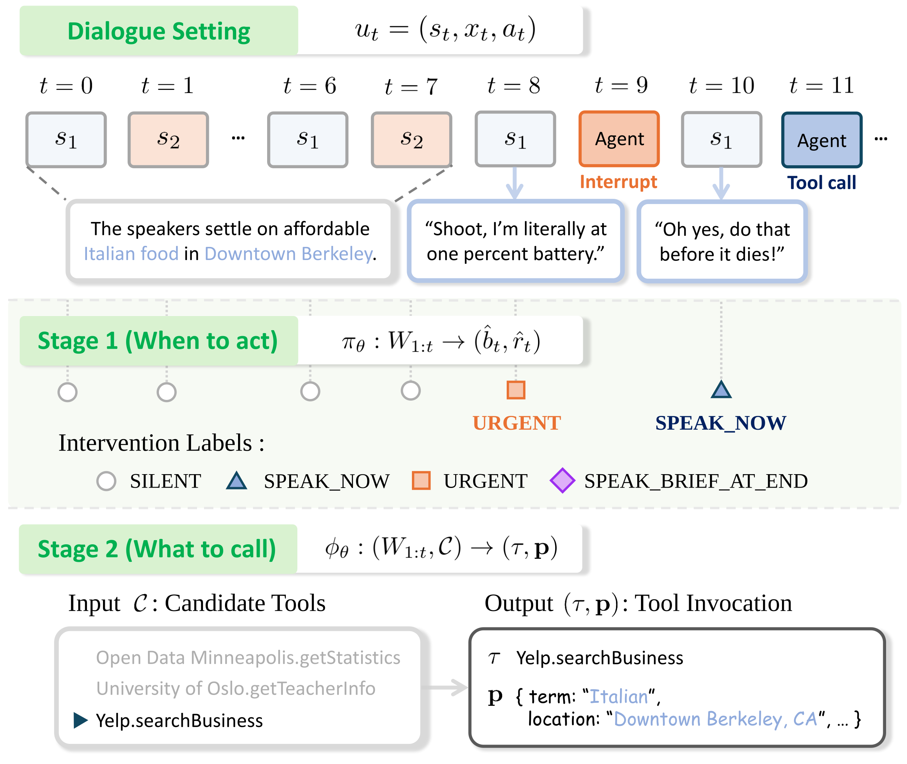
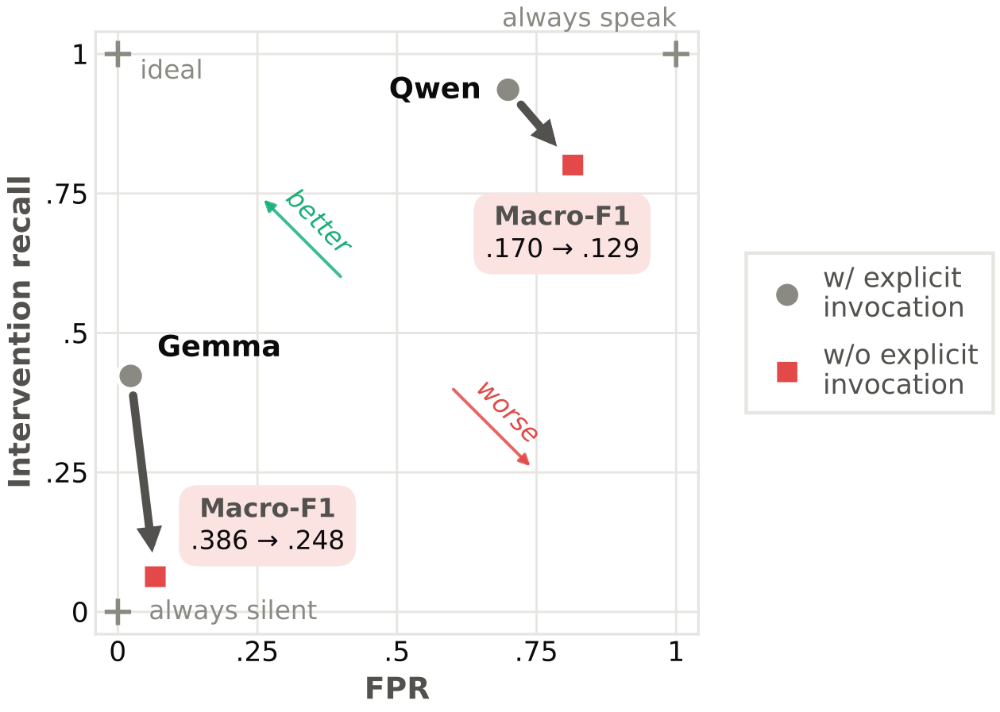
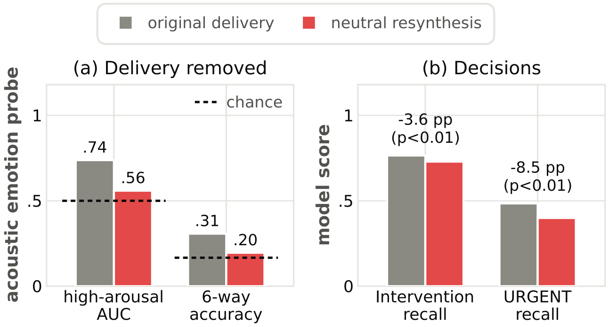

Abstract. Voice agents typically rely on explicit user requests, leaving open how they should assist in ongoing human-to-human conversations. Toward proactive voice agents, we study proactive spoken tool use, where an agent infers latent actionable intent and decides when to intervene and what tool to call. A benchmark of 3K synthetic spoken dialogues with turn-level intervention labels and reference tool calls is also constructed, separating intervention decisions from tool selection and argument grounding. Experiments with baseline models show that removing explicit invocation worsens intervention decisions, while high tool-selection accuracy coexists with poor argument grounding that reasoning prompting does not consistently improve. We adapt a single large audio-language model for both tasks through supervised fine-tuning (SFT), followed by reinforcement learning with verifiable rewards for tool-call correctness. SFT improves context-sensitive intervention and tool-call prediction, while grounding-focused reinforcement learning further improves the completeness and correctness of arguments recovered from conversation.
Keywords · LALM · proactive spoken tool use · intervention prediction · argument grounding · reinforcement learning
Two people talk; the agent is never addressed. It must recognise latent actionable intent from the conversation itself and decide, at every human turn, whether to help at all.
Base models name the right tool 88.8–95.4% of the time but complete the call correctly only 5.0–6.2% of the time. Prompting for explicit reasoning moves JGA by ±0.2 points and lowers Slot F1.
SFT lifts JGA from 5.0% to 61.5%. Grounding-focused RLVR takes it to 71.1% and Slot F1 to 88.0% — without degrading the intervention decisions.
A dialogue is a sequence of turns
ut = (st, xt, at)
— speaker, transcription, waveform. Every human turn is a decision point,
and both policies see only the observed speech prefix
W1:t = (a1, …, at).

The intervention policy maps the speech context to
ŷt = (b̂t, r̂t): whether
to intervene, and the timing type if so.
Given the same context and a candidate tool set
𝒞, the model predicts a tool and its argument dictionary
(τ, p). Prompts include candidate tool names but
no parameter schemas, so every value has to be recovered from
what was said.
Separating intervention detection from timing classification distinguishes a missed intervention from an error in intervention type. Evaluation covers 20,422 human-turn contexts for Stage 1 and 1,581 examples for Stage 2.
Dialogues are generated by multi-stage prompting with Gemini-3.7-flash from Conversation Chronicles seeds, using tool-use scenarios and function schemas from ToolAlpaca, then synthesised with IndexTTS2.
For each human turn, the observed speech prefix is paired
with yt = (bt, rt). An
immediately following agent turn gives bt = 1;
otherwise the target is (0, ⊥). Among positives, a turn-level
interruption annotation takes precedence, then the dialogue-level
end_of_dialogue attribute, and the rest become
NOW.
Low WER with high UTMOS and speaker similarity suggests the synthesised utterances largely preserve the intended linguistic content and speaker identity while sounding natural. WER is computed with Whisper-large-v3; speaker similarity with Resemblyzer.
| Dimension | Mean (1–5) | Scoring ≥ 4 |
|---|
300 examples. of examples score at least 4 on all four dimensions, with timing consistency showing the greatest remaining variation.
Each dialogue is evaluated twice — once with the explicit agent invocation, once after removing it — with all other context and labels unchanged.

| Model | Macro-F1 with invocation | without | Δ |
|---|
| Model | Condition | Tool Acc. | JGA | Slot F1 |
|---|
Both baselines reach high Tool Accuracy (88.8–95.4%) with low JGA (5.0–6.2%) and Slot F1 (23.9–30.4%). The reasoning-prompted variant improves tool selection for both models, changes JGA by only ±0.2 points, and lowers Slot F1 in both cases — so reasoning alone does not consistently improve argument grounding.
A single LALM serves as both πθ and
φθ, conditioned on task-specific instructions.
πθ is supervised with yt
on both silent and non-silent turns; φθ with
gold reference calls in annotated actionable contexts. Token-level NLL
on both.
GRPO from the SFT checkpoint, with
R = 𝟙[τ̂ = τ*] · F1slot(p̂, p*). An incorrect
tool earns zero; a correct one earns graded credit for argument
completeness and correctness.
LoRA on the LLM backbone and audio aligner, encoder frozen. KL regularisation (β = 0.04), 8 samples per prompt at T = 0.8, top-p 0.9, one epoch on 4×H100, lr 5×10⁻⁶.
Intervention and tool calling with full-dialogue audio input. SFT + RL reports mean ± standard deviation over three random seeds. Always Silent is the majority-class baseline — read Accuracy against it, never alone.
| Model | Checkpoint | Intervention (when to act) | Tool calling (what to call) | ||||
|---|---|---|---|---|---|---|---|
| Acc. ↑ | Macro-F1 ↑ | Speak-F1 ↑ | Tool Acc. ↑ | JGA ↑ | Slot F1 ↑ | ||
Speak-F1 collapses the three non-silent labels to measure whether the model correctly decides to intervene at all. SFT raises Speak-F1 by up to 54.7 points over Base and more than doubles the always-silent Macro-F1 reference; RLVR then raises JGA from 57.4–61.5% to 66.3–71.1% and Slot F1 to 87.0–88.0% while intervention performance is preserved.
The original audio is compared with a neutral-delivery resynthesis of the same utterances — lexical content preserved, vocal emotion removed.

URGENT
recall compare original and neutral delivery to test whether vocal cues
affect intervention decisions.| Probe | Original | Neutral |
|---|
| Endpoint | Change | Test |
|---|
Both probes approach chance after resynthesis, so the
manipulation worked. The larger change in URGENT recall
suggests vocal emotion can provide an additional cue for intervention
decisions beyond lexical content.
@inproceedings{jeong2027whentoact,
title = {When to Act, What to Call: Toward Proactive Voice Agents},
author = {Jeong, Jihoon and Jeon, Yejin and Jang, Jihyoung and
Kim, Hyounghun and Adelani, David Ifeoluwa and Subakan, Cem},
booktitle = {Submitted to IEEE International Conference on Acoustics,
Speech and Signal Processing (ICASSP)},
year = {2027}
}Jihoon Jeong and Yejin Jeon contributed equally. All artifacts will be open-sourced.